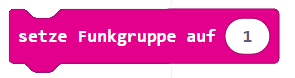
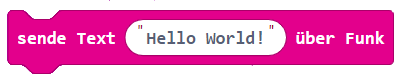
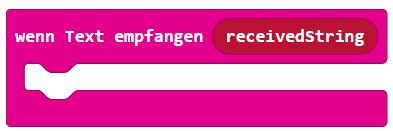

1
Funkgruppe festlegen
Öffne die Kategorie Funk und suche den Block „setze Funkgruppe auf". Ziehe ihn in den „beim Start"-Block. Setze den Wert auf 1. Beide micro:bits müssen dieselbe Gruppe haben!
2
Sender programmieren
Füge einen „wenn Knopf A gedrückt"-Block ein. Darin kommt „sende Text über Funk" aus der Funk-Kategorie. Tippe deine Nachricht in das Textfeld (z.B. „Hallo!").
3
Empfänger programmieren
Öffne ein zweites MakeCode-Fenster für den Empfänger. Setze auch hier die Funkgruppe auf 1. Füge den Block „wenn Text empfangen" ein — darin kommt „zeige Text" mit der Variable „receivedString".
4
Erweitern: Mehr Nachrichten
Füge beim Sender einen zweiten Block für Knopf B mit einer anderen Nachricht hinzu. Kannst du auch eine Zahl senden? (Tipp: „sende Zahl über Funk" + „wenn Zahl empfangen")
MakeCode Editor öffnen
In MakeCode öffnen
Tipp: Öffne zwei Tabs — einen für Sender, einen für Empfänger.
- Beide micro:bits müssen dieselbe Funkgruppe haben — sonst empfangen sie sich nicht gegenseitig.
- Der Block „wenn Text empfangen" erstellt automatisch die Variable „receivedString" — ziehe diese in den „zeige Text"-Block.
- Fertige HEX-Dateien zum Vergleich findest du im Ordner Programme/ des Projekts.
- Die Reichweite des Funks beträgt ca. 70 Meter — du musst also nicht nah beieinander sein!
⚠️
Versuche es zuerst selbst — die Lösung ist nur zur Kontrolle!
Sender – Code




Empfänger – Code


✨ Die Variable „receivedString" enthält die empfangene Nachricht — ziehe sie in den „zeige Text"-Block.
✅ Ich habe …
0 / 4